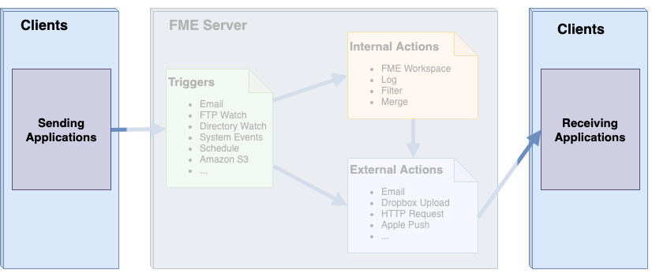
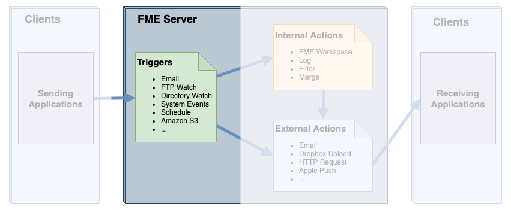
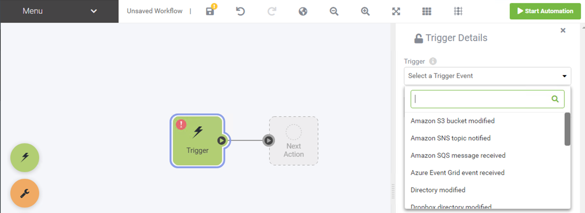
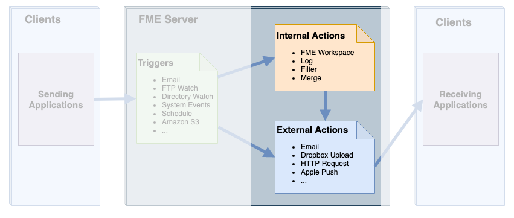
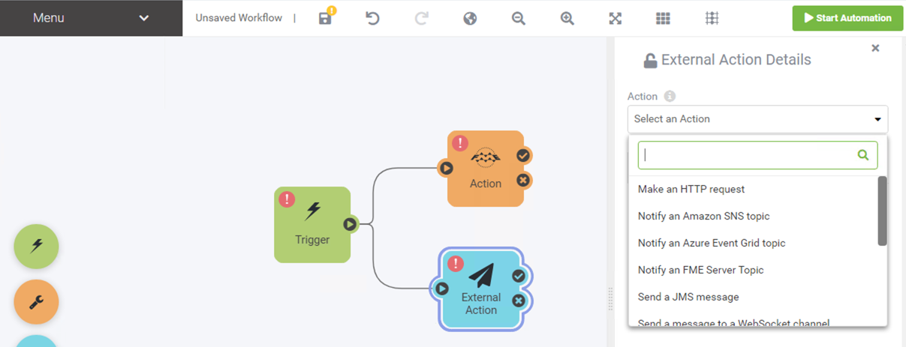
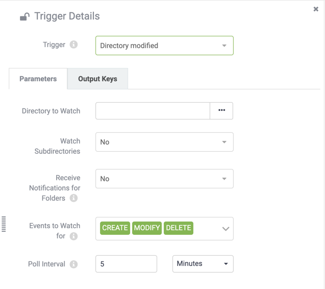

Manual Trigger. Allows the automation to be run on demand rather than in response to a schedule or event. Extremely useful for testing as it allows sample JSON messages to be passed downstream.
Manual Trigger. Allows the automation to be run on demand rather than in response to a schedule or event. Extremely useful for testing as it allows sample JSON messages to be passed downstream.After completing this unit, you’ll be able to:
Automations are built using a drag-and-drop interface similar to FME Workbench. Your Automations can consist of the following components:
Manual Trigger. Allows the automation to be run on demand rather than in response to a schedule or event. Extremely useful for testing as it allows sample JSON messages to be passed downstream.

Triggers. A Trigger listens for and receives messages from an external client or from within FME Server. Every automation begins with a Trigger.

Actions. Process messages from a trigger with an FME workspace or other tool hosted on the Server.
External Actions. Sends a message to an external client or another process in FME Server. What happens afterward is no longer part of this Automation.
Annotations. Add annotations to the automation canvas just like FME Workbench which can be stand-alone or attached to components.

Bookmarks. Organizes your workflow by grouping and separating components.
Let's look at the different components of an Automation in more detail.
A client is a user or system that sends or receives a message to/from FME Server. The client may be a physical person or may just be a component in a computer system. Either way, the majority of the time, a client is not a core part of FME Server, rather someone or something that interacts with it. There are two trigger protocol exceptions to this (Schedules and System Events) whereby FME Server is also the client sending the message.

For example, a database update might cause a trigger to send a notification to FME Server, in which case the database system is the client. However, a client could also be a person who, for example, triggers a notification by sending an email to FME Server.
Likewise, FME Server can send a notification for another client system to receive. Alternatively, this client can also be a real person, who might receive a notification in the form of an email.
A trigger is an FME Server component that receives incoming notifications from a client.

To set up a trigger in FME Server, a workspace author (or administrator) must build a new Automation. You can create an Automation ing the FME Server Web Interface on the Automations > Build Automation page:

An action is an FME Server component that sends outgoing notifications to a client.

To send a notification in FME Server, a workspace author (or administrator) must first create an Automation that contains a trigger, the output of this node is then connected to the action - just like how you connect transformers in FME Workbench.

Comparable to the FME Workbench canvas, Automations are constructed in a user-friendly drag-and-drop interface. Triggers and actions are displayed on the canvas as nodes identifiable by their different color. Input and output ports are used to create connections that will pass messages from the trigger to the associated action. The user must configure a series of parameters for the Automation to succeed dependent on the protocol.
A protocol is a system of data exchange between FME Server and a client.
We know that FME sends and receives messages. Protocols are the method by which these messages are sent and received. Each Trigger and Action is defined using a particular communication protocol.
To trigger an incoming message by email – for example – you would create an Automation using an Email Trigger. To send a notification to a Java Message Service, you would create an Automation that contains a JMS message Action.
There are many different protocols available in FME Server; some of them are only for use as a Trigger, others are only available as Actions, and some of them can be used with both types.
This table lists the different Trigger and Action protocols and the following pages go into greater detail on some of the most commonly used types.
| Protocol | Description | Trigger | Action |
|---|---|---|---|
| Amazon S3 | Monitoring activity in an AWS S3 bucket/Communication to Amazon’s Simple Storage Service | Y | Y |
| Amazon SNS | Communication with Amazon’s Simple Notification Service | Y | Y |
| Amazon SQS | Communication with Amazon’s Simple Queue Service | Y | Y |
| Azure Event Grid | Communication with Microsoft Azure Events | Y | Y |
| Directory Watch | Monitoring activity in a Directory | Y | |
| Dropbox | Monitoring activity in a Dropbox folder/Communication of a notification (file) to the Dropbox web service | Y | Y |
| Email (IMAP) | Receive email messages from an IMAP Server | Y | |
| Email (SMTP) | FME Server itself receives email messages/Communication via an email server | Y | Y |
| Filter | Test incoming messages for the presence of a specified string | Y | |
| FME Server Topic | Receive/Send messages to a Topic to initiate workflow processes | Y | Y |
| FME Workspace | Run an FME Desktop Workspace published to FME Server | Y | |
| FME Dynamic Workspace | Run an FME Desktop Workspace published to FME Server, with the repository and workspace name coming from output keys in the Automation | Y | |
| FTP | Monitor activity/upload a file to an FTP Site | Y | Y |
| HTTP Request | Post HTTP requests to the specified URL | Y | |
| JMS | Communication with a Java Message Service | Y | Y |
| Log | Write Event/Automation details to a log | Y | |
| Merge | Combine messages before proceeding downstream in an Automation | Y | |
| SFTP | Communication with an SFTP site | Y | |
| Schedule | Complete workflow tasks at specific times in the future | Y | |
| System Events | Communication with FME Server systems | Y | |
| UDP | Communication via a User Datagram Protocol port | Y | |
| WebSocket | Communication via a WebSocket channel | Y | Y |
| Webhook | Receive messages sent as HTTP Post requests from another application | Y |
Protocols are pre-defined components in the FME Server architecture and do not need to be defined in the web interface.
However, a number of fields are made available to configure when an Automation is created.
For example, here are the parameters for a Directory modified Trigger:

These parameters must be set when the Automation is created as they are needed in order for FME to be able to watch and receive notifications about this Directory. Without configuring these parameters the Automation will have no behave as anticipated when enabled.